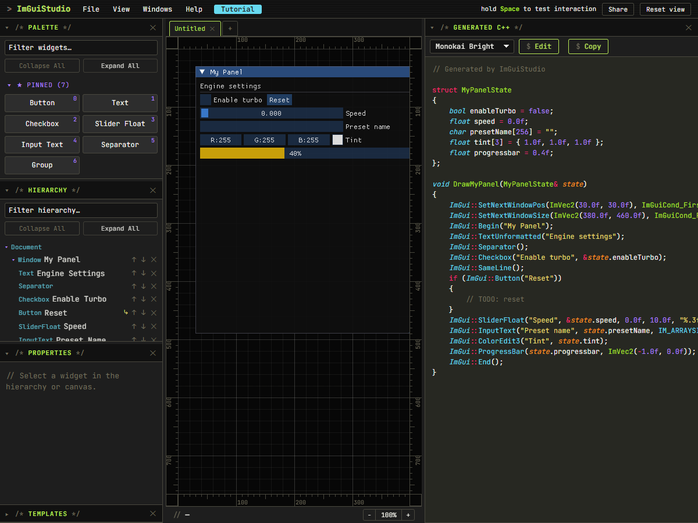
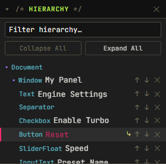
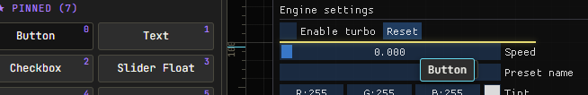
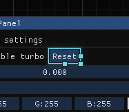
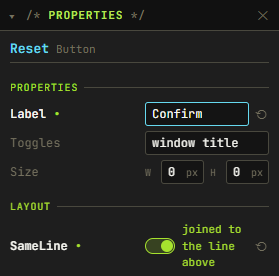
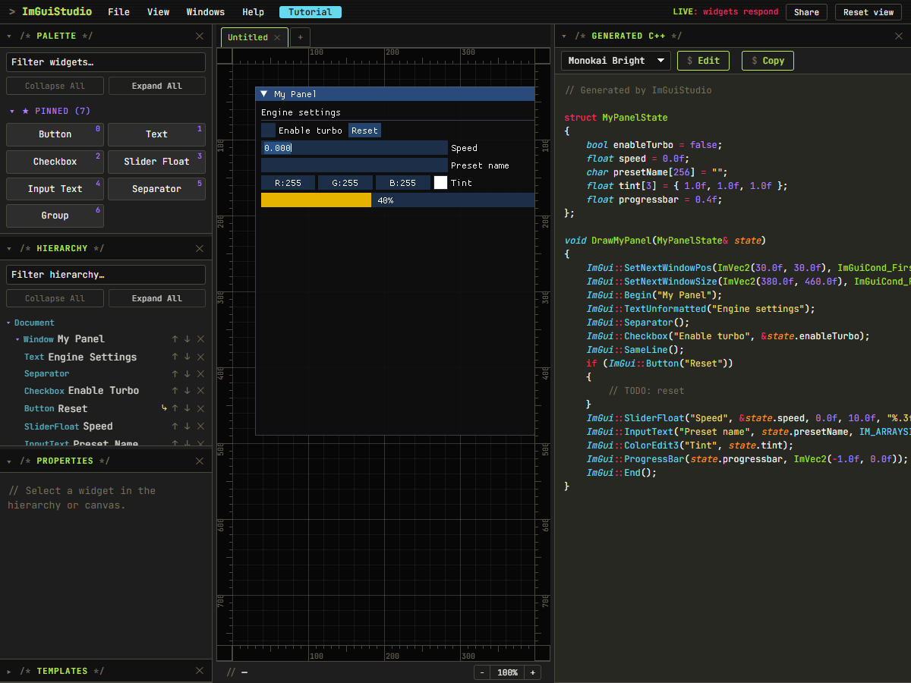
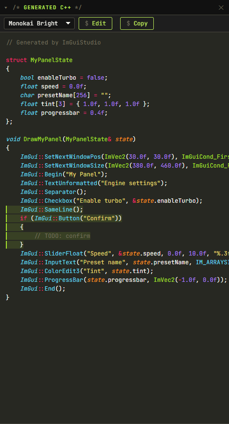
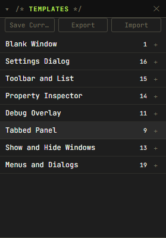

Ten Minutes With ImGui Studio
The parts of this tool that don't work like the tools you already know. The editor is a tab away and it opens on a panel you can take apart. Read a section, then go poke at it.
ImGui Studio is a visual builder for Dear ImGui layouts. If you already write ImGui by hand you iterate fast enough as it is, with Edit and Continue or a hot-reloaded DLL. ShowStyleEditor covers colors. What you don't have is a document: nothing to hand to someone else, nothing to read in a diff, no way to see a whole panel without running the program. That's the gap this fills, without taking your source hostage. The C++ it writes is ordinary ImGui calls that it reads back again.
What's on Screen

You start on a sample panel rather than an empty sheet. There's something to change straight away.
- Palette, Hierarchy, Properties, and Templates share the left dock, with Templates starting collapsed. Click any panel's title bar to fold it, or drag that bar to move the panel to another dock.
- The Generated C++ pane has the right dock to itself.
- Canvas in the middle, rulers around it, status bar underneath with the zoom stepper in it.
- The starred Pinned section at the top of the palette is a hotbar. The number in a tile's corner arms that widget. Ctrl+number pins the selection into that slot.
Only one of those is the real thing. The Document is a tree of windows and widgets. The canvas and the C++ pane are both drawn from it. Edit either one and you edited the Document, which is why they never disagree. Hold on to that and the rest of this page is mostly consequences.
There Is No X and Y
Dear ImGui uses a flow layout. This is the part that trips people up coming from Figma or Qt. Widgets stack top to bottom in the order they appear. A widget has no position of its own. You can't drag a Button into the middle of a window, because there's no field that would remember where you put it. What you control is order, joins, and nesting.
Windows are the exception. A window has an x and a y and you drag it by its title bar, with Shift snapping it to the 20px grid you can see. Everything inside it flows.
Order
Drag rows up and down in the Hierarchy, use the ↑ ↓ buttons on a row, or press Ctrl+↑ and Ctrl+↓. Order in the tree is order on screen, and tab order too. Drop a row onto a container to reparent it.
Joins
Every widget starts a new line unless it's joined to the one above, which is ImGui's SameLine. The sample panel already has one: "Enable turbo" and "Reset" share a row.

⤷ on its row means it's joined to the line above.Click Reset on the canvas and press J. It drops onto a line of its own. Press J again and it snaps back up beside the checkbox.
J on the first widget in a container does nothing, since there's no line above to join to. The status bar says so when you try.
Nesting
Containers hold other widgets. Select a few things and press Ctrl+G to wrap them in a Group, Ctrl+Shift+G to unwrap. Or drag out a Child Region, a Collapsing Header, a Tab Bar, or a Table and drop widgets into it.
Dropping Sets All Three at Once
New widgets come out of the palette. Click a tile to append one to the nearest container that'll take it, or drag it onto the canvas and pick the spot yourself. The indicator under the cursor tells you what the drop will do before you let go.

- A horizontal line means a new line, above or below the widget you're over.
- Move into a widget's right-hand edge and the line turns vertical. That drops joined onto its row.
- Hold Shift and anything you hover takes the join wherever the pointer sits. It's read as you move. You can add or drop it mid-drag.
- A box around a container means the drop goes inside it.
Select It, Then Change It
Click a widget on the canvas or its row in the Hierarchy. It's one selection shown three ways: the canvas outlines it, the tree highlights the row, and the C++ pane marks the lines it produced.


Properties sits on the left under the Hierarchy. Fields differ per widget. These are the ones worth knowing:
- Label, the text drawn on or beside the widget. Double-click it on the canvas, or press F2, to rename in place.
- SameLine, the join from the last section as a toggle. On a container's first widget it reads "nothing to join to" and does nothing.
- Size on widgets that carry a width and a height. Width is the lighter version for a widget with no size argument of its own, emitted as
SetNextItemWidth. - A colors section at the bottom, listing the ImGui color slots that widget actually uses rather than the whole enum. Overrides come out as matched
PushStyleColorandPopStyleColorpairs.
A green dot after a field name means you've moved it off its default. The ⟲ beside it puts that one property back. Windows carry their own set on top: "No Title Bar", "No Resize", "Auto Resize", "Closable", and the size and position they open at.
The Preview Is Real ImGui
The canvas is not a picture of what ImGui would draw. It's Dear ImGui compiled to WebAssembly, drawing your document every frame with the same code your program will run.
Hold Space and it goes live: sliders drag, checkboxes tick, text fields take a caret. Let go and you're back to editing with the selection you had. Press Tab to stay in Live mode instead.

The Code Pane Goes Both Ways
The pane on the right regenerates as you work. What it holds is what you'd paste into a project: a state struct with your widget values in it, and a draw function that emits the layout.

A window called Playback holding a Text, a Slider Float, and two Buttons, the second joined to the first, comes out as this:
// Generated by ImGuiStudio
struct PlaybackState
{
float volume = 0.0f;
};
void DrawPlayback(PlaybackState& state)
{
ImGui::SetNextWindowPos(ImVec2(30.0f, 30.0f), ImGuiCond_FirstUseEver);
ImGui::SetNextWindowSize(ImVec2(380.0f, 460.0f), ImGuiCond_FirstUseEver);
ImGui::Begin("Playback");
ImGui::TextUnformatted("Now playing");
ImGui::SliderFloat("Volume", &state.volume, 0.0f, 1.0f, "%.3f");
if (ImGui::Button("Play"))
{
// TODO: play
}
ImGui::SameLine();
if (ImGui::Button("Stop"))
{
// TODO: stop
}
ImGui::End();
}You own the struct. Keep one somewhere that outlives a frame and call the draw function from your frame loop. The generated code holds no state of its own, which is what lets it land in a project without fighting what's already there. Copy at the top of the pane takes the lot.
And Back Again
The pane is read-only until you say otherwise. Press Edit in its header and the text becomes an editor, with Apply and Cancel where Edit was. Type C++, press Apply, and it parses back into the Document. Cancel throws the edit away.
No other builder does this. Nobody expects it to work. What survives a trip out and back:
- Calls the tool models become widgets.
- Anything it doesn't model is kept byte for byte as a Raw C++ node in the tree. It's preserved, not executed. The preview shows a placeholder for it.
- Code above and below your windows is kept. A helper you wrote at the top of the file is still there afterwards.
- Formatting inside generated blocks is normalized on the way back.
Where Your Work Lives
Saved in the browser as you go, and the tab strip above the canvas holds several projects at once. Nothing is uploaded anywhere. Switching projects starts a fresh undo stack. Ctrl+Z can't reach back into a document you left.
- File > Export JSON writes the document to a file you can commit. Import JSON reads one back.
- Share, top right, copies a link with the document packed into the URL. Nothing is stored on a server.
- File > Reset to Sample puts the starting panel back. It asks before discarding what's there. Ctrl+Z undoes it anyway.
Templates Are Worked Examples
The Templates panel sits at the bottom of the left dock, collapsed until you click its title. It holds eight worked examples: a blank window, a settings dialog, a toolbar over a list, a property inspector, a debug overlay, a tabbed panel, a show-and-hide pair, and a menus-and-dialogs example. Each is a small document that already works, so it's a starting point and the reference for its feature at the same time. The number on a row is how many widgets the template carries.

Click a name, or its ＋, and the template's widgets land in the nearest container of your selection. Drag a row onto the canvas instead to put them where you drop. A template that brings whole windows ("Show and Hide Windows", "Debug Overlay") adds them at the document root whatever you had selected, since a window can't live inside another one. Those two are also the ones to read if you want one panel to open another.
Right-click a row for the bigger moves:
- Apply Here replaces the current document with the template. It asks first, and Ctrl+Z undoes it.
- Open as Project puts the template in a new tab named after it and leaves your document alone.
- Export Template writes that one template to a JSON file, built-in or not.
Save Current at the top of the panel, or File > Save as template, adds what you built to the list, named after its first window. Your own rows get a ✕ to delete, and any row drags up or down to reorder. The order survives a reload. Export writes your custom templates to a JSON file and Import reads them back, which is how a team shares one library.
Keep Going
The fastest way to learn a feature here is to open the template that uses it and pull it apart.
- ? opens the shortcut list, built from the same table the app dispatches on. Click any row to rebind it.
- Ctrl+K is the command palette for anything without a key. / opens the same picker filtered over all 60 widget types, which is how you reach the long tail.
Some corners are rougher than others. If the editor and this page ever disagree, the editor is right.